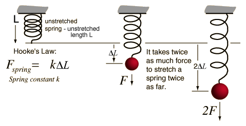

Lesson 39 - Introduction to Physical Simulations
Introduction
This lesson and the next one are a little different in that they are less about just three.js and WebGL, but also include material about pysical simulations. This lesson focuses on the physics of springs while the next looks into the physics of rope (which turns out to be rather spring-like as well).
Spring physics can be quite complex if one takes into account all the possible variables, but if one simplifies the problem down to a simple inelastic spring then it becomes much simpler. The physics of springs was first elucidated in the 17th century by Robert Hooke. The following diagram summarizes the physics:

But in a practical sense, how does the spring actually "work"? If we are going to simulate it in JavaScript, how does it work? Well. there are many levels at which we could try the simulation, b
And that's it! Click on this link to see the actual rendered demo in all it's springy glory!